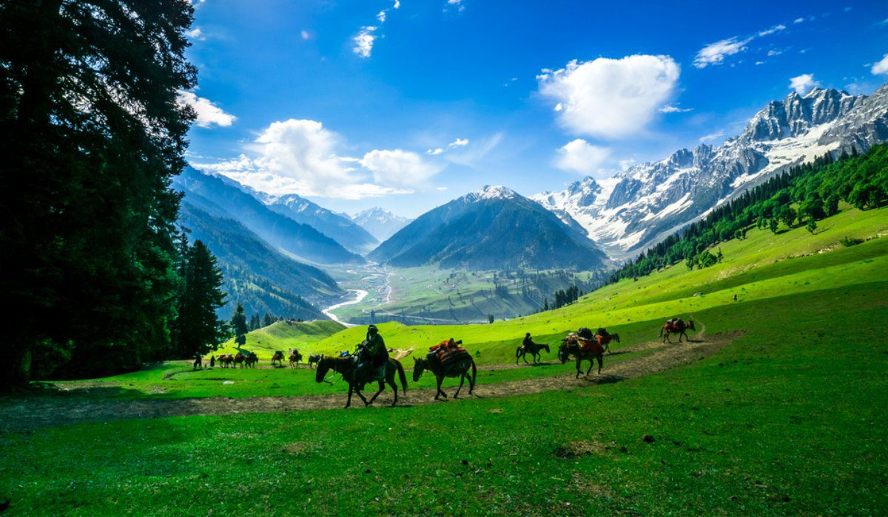

"When meditation is mastered, the mind is unwavering like the flame of a lamp in a windless place." – Bhagavad Gita 6.19

Jesus Christ was one of the major Christian personalities who supposedly travelled to India besides Thomas the Apostle, Mother Mary and Mary Magdalene. Disseminated pieces of valid historical evidence and documents for Jesus’ travels and his companions can be found across Buddhist Tibetan monasteries in Ladakh and Tibet, Kashmiri historical accounts like the Tarikh-i-Kashmir, Apocrypha (relevant Biblical writings that are not usually accepted by modern evangelical priests), the Bible, the Koran, wider Sanatani scriptures like the Bhavishya Mahapurana, Yogic Scriptures like the Nathnamavali (a compilation kept sacred amongst the Nath Yogis of the Aravalli Hills in Vindya Mountian Range) and some other sources. The complementation of Jesus’ teachings and Sanatana Dharma, emphasising love, compassion, selfless service, the obtainment of inner peace and eventually spiritual liberation, strongly suggests that Jesus travelled to India. Across the modern-day landscape of Kashmir, reminiscents of his contribution and his family’s can be found such as a settlement in Kashmir by the name of Mari that has a hill called Pindi Point upon which is a tomb called ‘Mai Mari da Asthan’ or the ‘Final Resting Place of Mother Mary’ and the Rozabal Shrine which contains the tomb of Yuz Asaf who shares striking similarities with Jesus Christ and is considered to be none other than him by the Ahmadiyya sect of Islam in Kashmir, the residential community and many historians. Moreover, the motive for his travel is evident in the Bible, Matthew 10: 5-6 where he says ‘These twelve Jesus sent forth, and commanded them, saying, ‘Go not into the way of the Gentiles, and into any city of the Samaritans enter ye not: But go rather to the lost sheep of the house of Israel,’ where ‘lost sheep’ refers to the 10 Lost Tribes of Israel as at Jesus’ time, only the Tribes of Judah and Benjamin remained in Jerusalem. It is widely accepted that Thomas the Apostle followed his Lord’s words by spreading the message of love, faith, and service to the farthest regions of India and reuniting these invaluable morals with the ‘lost sheep’ and the other populations present. Many converted to Christianity, so the Portuguese were stunned to find Christian communities already present in India when they arrived on the shores. Today, Thomas the Apostle rests peacefully in the Santhome Cathedral Basilica of Chennai.
The Bhavishya Mahapurana sketches out the remarkable encounter involving King Shalivahana who ruled the lands until the Indus border. Once during his reign, he ventured across a snowy mountain in the land of Hunas (around modern-day Western Tibet). Amidst the rugged, snow-covered peaks that towered majestically against the hues of the rose and gold celestial kaleidoscope above, where icy winds whisper the secrets of ancient valleys illuminated like a delicate diadem by the cascading rivulets that dance their way below, where august lakes mirror the sublimity of the landscape with more depth like liquid silver and the crystalline ivory blanket stretched incessantly, he conversed with a saintly figure - a handsome man with a fair complexion and white clothes.
The man introduced himself as the Son of God and as the Messiah who propagated goodness after the Truth died in the land where he hailed from. He calls himself Isha Masih, the one who has established a pristine, everlasting idol of the transcendental Supreme Personality of Godhead (Eesh) in his heart6.
The great king bowed down in deep reverence and saluted the saint. This is the saint we know nowadays in the Western world as Jesus although Isha Masih is often used as the term for Jesus the Messiah by Urdu and Indian speakers until this day. The Sanskrit word, Issa refers to the Supreme Being while Jesus is derived from the Greek word ‘Joshua’ which is in turn attained from ‘Jehoshua’ means ‘Help of Jehovah’ or Saviour’.
The scroll entitled ‘Life of Saint Issa’ or ‘The Unknown Life of Jesus Christ’ was claimed to have been found at the Buddhist Hemis Monastery in Leh, Ladakh, India by Nicolas Notovitch (a Russian explorer, writer and aristocrat) that mentions Jesus’ travels to holy cities like Varanasi, Rajgir and Jagannath Puri and his studies under miscellaneous schools of philosophy from Sanatani ones to even some Buddhist schools in ‘They Spent Six Years In Juggernaut, Rajagriha, Benares, And The Other Holy Cities7 ’.
The document recounts the slavery of Israel, Moshe or Moses courageously leading his country out of the bonds of servitude and Jesus’ Life in India, his teachings and his crucifixion. Throughout history, spiritual masters like Swami Abhedananda doubted the authenticity of such a charter and his purpose of the travel was to lay bare its falsehood but instead, he reveals in his book, ‘Journey Into Kashmir and Tibet’ that such a manuscript actually exists and was handled to him by a kind lama of the monastery. Several other mainstream texts like the Quran hint towards his childhood travels in:
"And We made the son of Mary and his mother a Sign, and gave them shelter on an elevated land of green valleys and springs of running water."
As visible, the Kashmir Valley is a perfect match to the description above.
The Nathnamavali which means ‘The Lineage of Masters’ mentions their Guru of Gurus, Isha Nath who arrived at the young age of fourteen years old. Preceding Isha Nath in the lineage includes Dattatreya (the Adi-Guru or first teacher of the Nath lineage), Maharishi Nandinath who initiated eight disciples (Sanatkumar, Sanakar, Sanadanar, Sananthanar, Shivayogamuni, Maharishi Patanjali, Vyaghrapada and Tirumular) while Maharishi Patanjali thereafter headed the lineage and then Chetha Nath. After acquiring knowledge of various esoteric sects, he returned to his country to preach. However, it wasn’t long before a group of ruthless and avaricious men plotted against him to have him crucified. Following this event, the Nathnamavali gives an intriguing unfamiliar recount of Jesus’ resurrection. According to this version, Issa Nath entered a state of ‘samadhi’ or a state of deep trance using the Yogic skills he had attained during his days of education in India. It was presumed that he was dead so the people buried him. Meanwhile, his guru Chetha Nath seemed to feel or understand the pain his faithful disciple was going through for a long time so he travelled to Israel, woke Jesus from his state of samadhi and took him back to India where he initiated the worship of lingam and yoni. Even to this date, the Nath Yogis continue to chant the hymn-
'My friend, to what country did Ishai go, and to what country went John?
My friend, where is the guru of the gurus, and where is your mind resting?
My friend, Ishai has gone towards Arabia, John towards Egypt.
My friend, Ishai is the guru of my gurus. The mind of the yogi rests only in the Yogi.’7
Interestingly, John the Baptist is also possibly alluded to in this hymn. John the Baptist is considered to be the greatest and final prophet among some religious communities who baptised Jesus in the sacred Jordan River and is believed to have been sent to guide the children of Israel. A few historians testify that the Essene Community may have trained John the Baptist or have been an Essene. The Essenes were a mystic religious cult which is analogous to multiple elements in schools of Sanatana Dharma where followers were vegetarian, refrained from drinking alcohol, sacred ablution and renounced a luxurious lifestyle. The etymology of the term ‘Essene’ has been long unclear but may have taken inspiration from a foreign mispronunciation of ‘Eeshani’ adorer of Shiva or God. John the Baptist and Jesus were some of the early Christian luminaries who abstained from meat-eating and John the Baptist never drank alcohol.
The idea that Jesus may have survived the ordeal of crucifixion as suggested in the text of the Nathanamavali is one that many people have never been introduced to and sometimes instantly and blatantly dismissed but is an emerging possibility in the wake of new scientific research and re-examination of several texts.
"When meditation is mastered, the mind is unwavering like the flame of a lamp in a windless place." – Bhagavad Gita 6.19

Sanatana Dharma and Jewish Mysticism (Kabbalah)

Did you know that Saraswati is worshipped in Japan as Benzaiten?
For any queries or meaningful conversations, feel free to reach out to me via email.